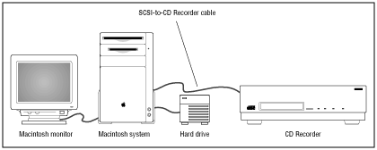

To master the CD-ROM disc, you need a CD-ROM recording station. This section lists hardware requirements and provides information about recommended recorders and media.
Recording Station Layout
The figure below shows one possible setup for the system on which you can master the CD-ROM disc.

Figure 1: CD-ROM recording station.
Hardware Requirements
Here's a detailed list of all required and recommended hardware and other parts:
Macintosh with monitor, keyboard, and mouse
External hard drive (recommended for moving CD-ROM image file)
Compact disc recorder
SCSI-to-Mac cable
SCSI-to-CD recorder cable
Canister of compressed gas (recommended)
Note: Use double-shielded SCSI cables.
Recommended Recorders
3DO Developer Support has had good results with Philips, Sony, Yamaha, and Kodak burners.
There have been problems burning CD-ROMs with JVC, Pinnacle, and Micro burners.